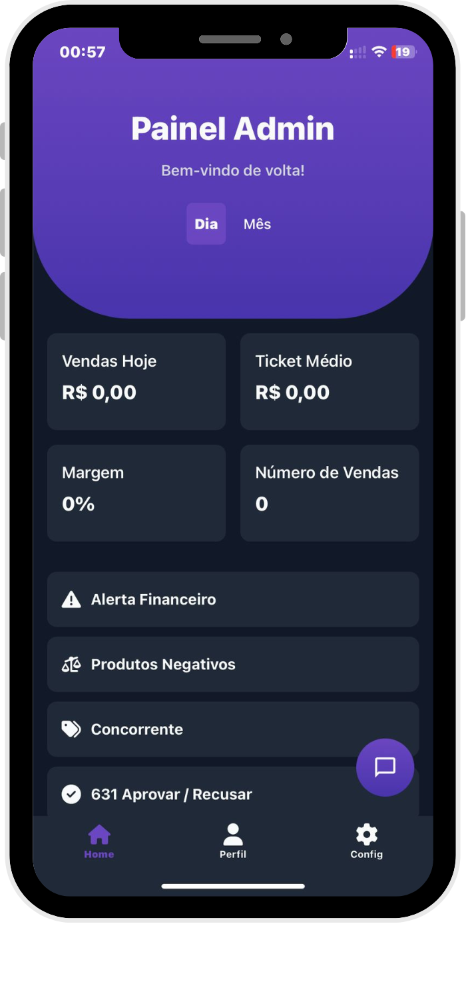
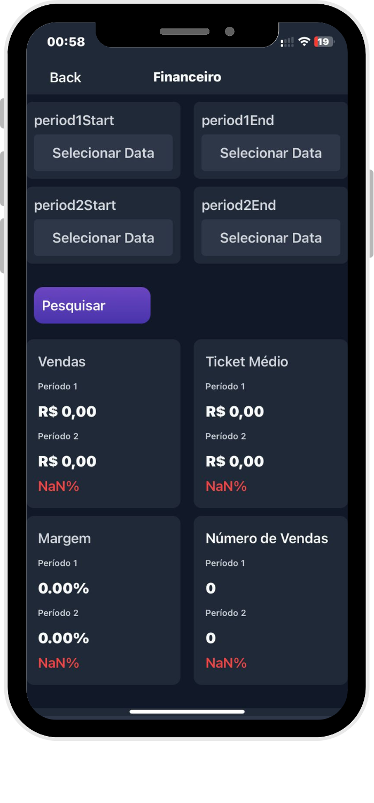
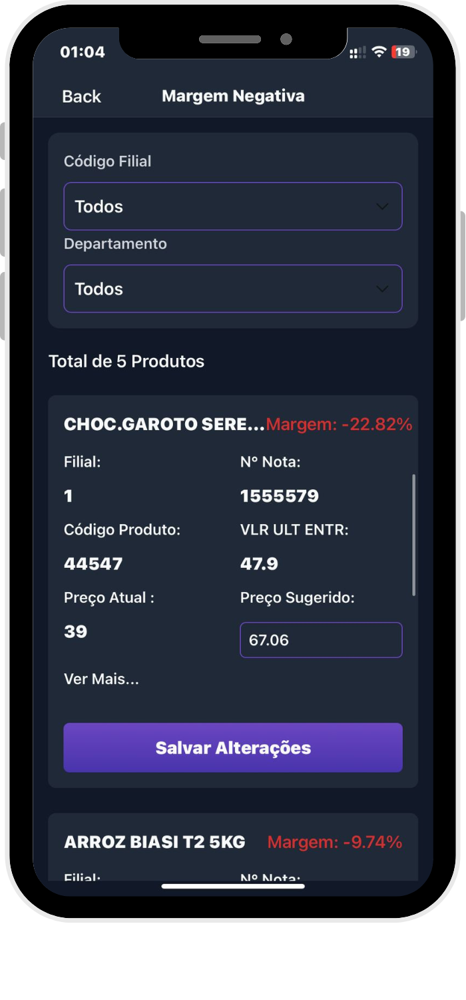
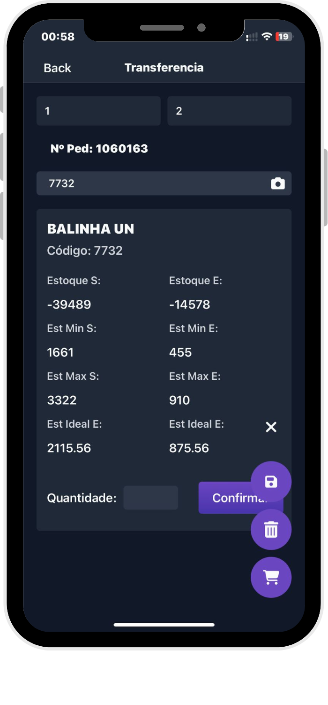

A tela inicial reúne as principais métricas do dia: vendas, status das filiais e alertas críticos, oferecendo uma visão rápida do cenário operacional.
A partir daqui é possível acessar indicadores, relatórios e atalhos para ações como transferência entre filiais e sugestões inteligentes para reposição.

Análise completa de vendas com comparação entre períodos, exibindo indicadores como ticket médio, margem e quantidade de cupons emitidos.
Visualização por loja ou consolidado, com acesso a relatórios detalhados para apoiar decisões rápidas.

Lista dinâmica de produtos vendidos com margem abaixo do mínimo configurado, gerando alertas em tempo real para evitar prejuízos silenciosos.
Ajuda a agir rápido na precificação e reduzir perdas no dia a dia.

Transferências de produtos entre filiais de forma ágil e intuitiva, direto pelo celular.
Ideal para equilibrar estoques, reduzir rupturas e otimizar a reposição com poucos toques.